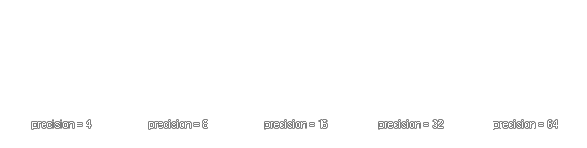

draw_set_circle_precision(precision);
| Streit | Beschreibung |
|---|---|
| precision | Die Genauigkeit aller nach dieser Funktion gezeichneten Kreise wird aufgerufen. |
Rückgabe: N / A
Um die Leistung beim Zeichnen von Kreisen zu optimieren, zeichnet GameMaker Studio 2 grundsätzlich eine Polygonform mit genügend Seiten, damit sie kreisförmig erscheint. Je nachdem, wie groß oder klein Sie Ihre Kreise benötigen, können Sie jedoch feststellen, dass das Ändern dieses Werts die Leistung Ihres Spiels verbessern oder die Kreise besser aussehen lässt. Der Genauigkeitswert, den Sie in diese Funktion eingeben können, ist die Anzahl der Seiten, die das Kreispolygon hat, und diese Zahl kann zwischen 4 und 64 liegen, muss jedoch eine durch 4 teilbare Zahl sein, mit einem Standardwert von 24. 
draw_set_circle_precision(12);
Der obige Code zeichnet alle Kreise mit einem 12-seitigen Polygon.